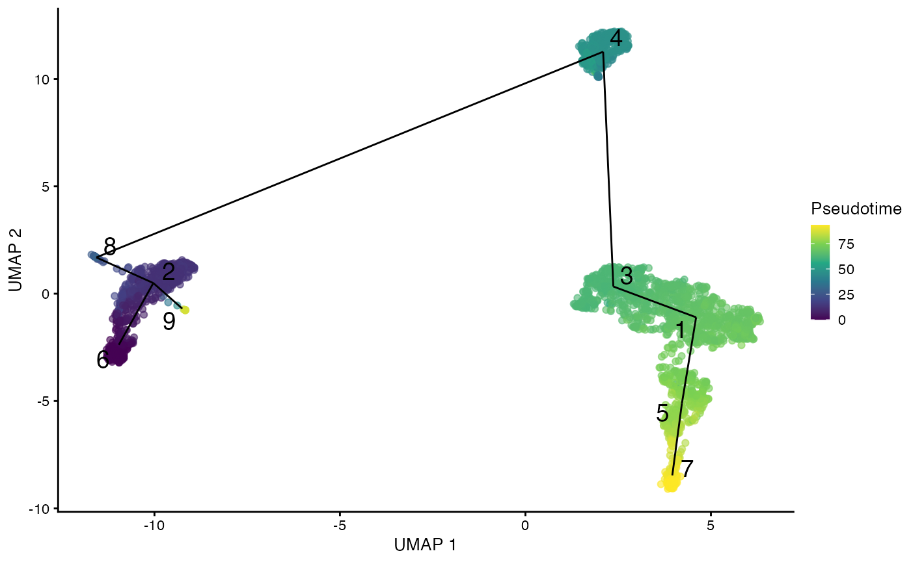
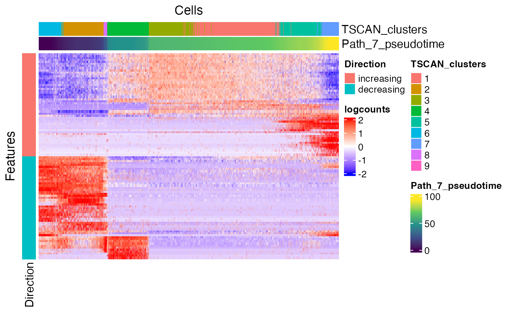
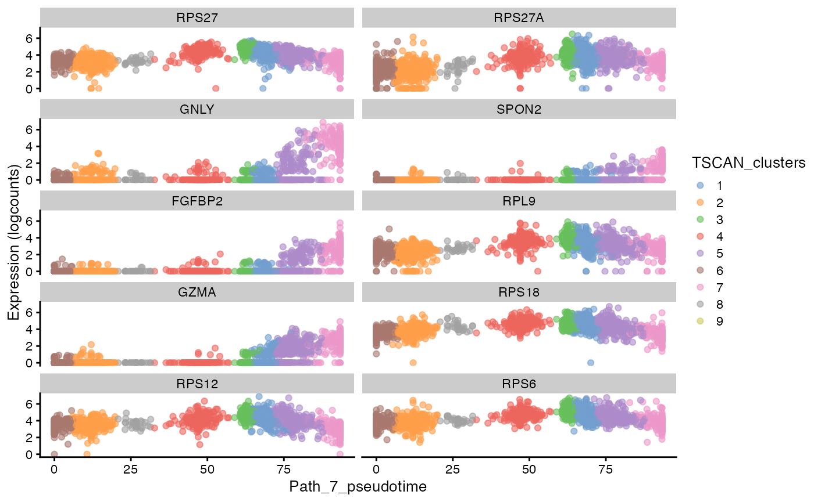
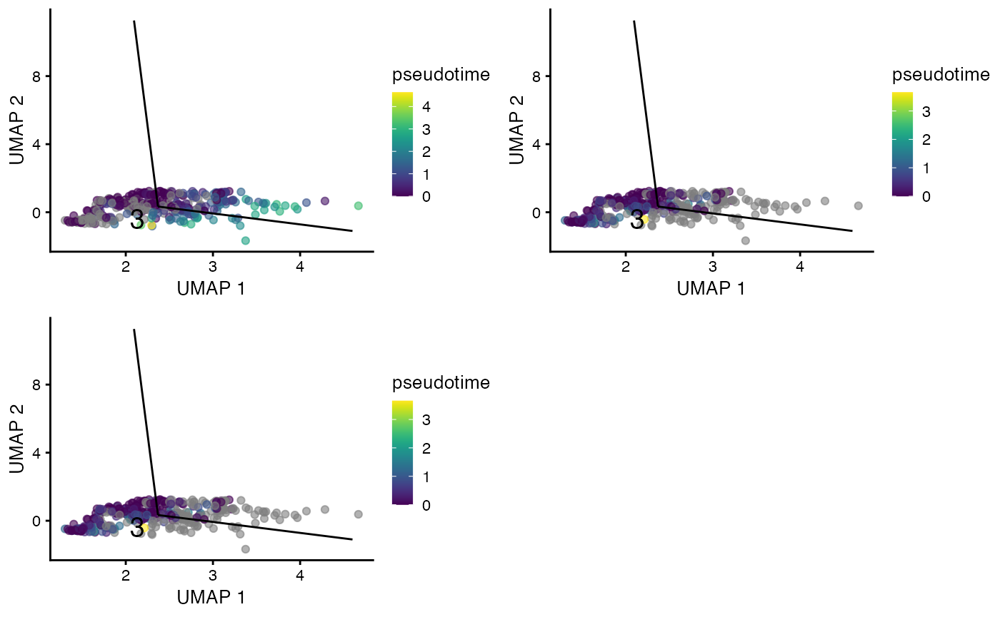
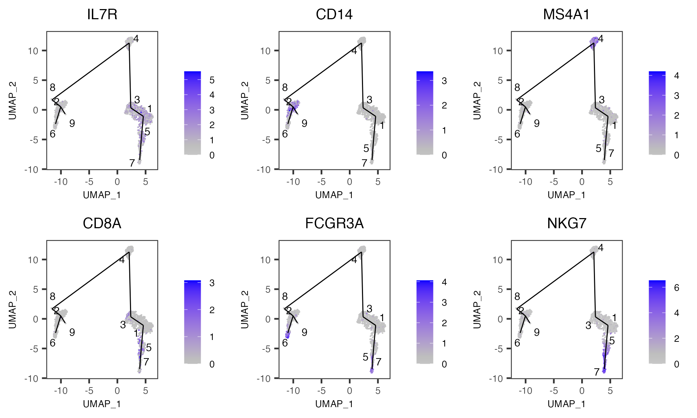

Trajectory Analysis with TSCAN
Nida Pervaiz
Source:vignettes/articles/trajectoryAnalysis.Rmd
trajectoryAnalysis.RmdIntroduction
Trajectory analysis is a technique to determine pattern of dynamic process experienced by cells and then arrange cells as per their progression. Trajectory is a path through high dimensional expression space that traverses various cellular states associated with a process like differentiation.
There are multiple algorithms to implement trajectory analysis, however currently Single Cell Toolkit (SCTK) only provides methods from TSCAN [1]. SCTK basically wraps three types of analysis from TSCAN:
- Calculate MST and determine the trajectory as the longest connected path of the MST. The TSCAN MST calculation is cluster based, thus cluster assignment of cells is required. See Clustering Documentation. For the computation efficiency, a low-dimensional representation of the dataset is also required for the trajectory and pseudotime calculation. See Dimensionality Reduction Documentation. For the visualization of trajectory paths projected on cells, we recommend generating UMAP embedding, as it gives a better presentation of the global structure than TSNE. See 2D Embedding Documentation.
- Identify features with significant changes along one pseudotime path. TSCAN fits a natural spline to the expression of each feature, and performs an ANOVA test to determine if there is some significant trend with respect to the pseudotime. Step 1 is required to provide the pseudotime path.
- Identify features with significant changes between paths. TSCAN sets the branch point of interest as a root, recomputes pseudotime for paths rooting from here, finds significant features changing on each path, and finally identifies path specific features. This is most interesting for cells close to the branch point and identified features might be responsible for the branching event. The general strategy here is to fit a trend to each path, followed by a comparison of the fits between paths. Step 1 is required to provide the pseudotime paths.
More detailed instructions on how to use TSCAN approach either through the Shiny UI application (select “Interactive Analysis”) or through the R console (select “Console Analysis”) are described below:
Workflow Guide
Entry of the Panel
From anywhere of the UI, the panel for TSCAN trajectory analysis can be accessed from the top navigation panel at “Trajectory Analysis” and then select “TSCAN”.

Calculate Pseudotime Values
The UI is constructed in a sidebar style, where the left-sided sidebar works for setting the parameters and running the TSCAN, and the right part main panel is for visualization.
For finding the MST trajectory and estimating pseudotime, there are always two essential inputs that users should make selection:
“Select input dimension reduction” - Used for specifying which low-dimensional representation to be used for MST construction.
“Select clustering result:” - Used for specifying which cluster assignment variable in cell metadata should be used for MST construction. When selecting “Auto generate cluster”, the UI will automatically run scran-SNN based Louvain clustering on the specified dimension reduction, and use this cluster assignment as the guide for MST construction.
After the parameters are set, press button “Run” to start the calculation. When the process is successfully done, a scatter plot of cells colored with pseudotime, with the trajectory projected to the coordinates, will be shown on the right. By default SCTK UI use the input dimension reduction for visualization. Users can change it to a UMAP embedding with the option “Select 2D embedding for visualization” in the dropdown box.

Identify Genes Differentially Expressed For Path
For identifying DE genes for path, users must have run the trajectory construction in the first step. There are two essential inputs that users should be aware of:
- “Select assay:” - The expression matrix to use for testing the expression change. Here a log-normalized matrix is recommended.
-
“Select path terminal node:” - The path where the
test will be performed. Options will only appear after the first step,
and will be listed in format
{terminal node of the path}|{all nodes on the path}(a node is a cluster). Users can go back to the first collapse box and easily see where each path is.
During the analysis, users might found some cell population with features dominating the set of DE features and mask other interesting effects. To exclude the cluster(s) of them in the test, users can make selection in “Select cluster(s) to discard (OPTIONAL)”.
After these parameters are set, press button “Run” to start the test. Visualization will be shown on the right after running. To present the features the UI has 3 visualization tabs:
- Heatmap - Features that are regulated in both direction (up-/down-) with top significance (sorted by P-value) on the path are included. Cells on the path are included. And the expression value in the input matrix are visualized.
- Up-regulated Genes - Top up-regulated features along the path are selected. SCTK generates scatter plot of cells on the path, using the pseudotime order as the X-axis and the expression level of each feature as Y-axis, which clearly shows the trend of expression changes.
- Down-regulated Genes - The same as above, but for down-regulated features.
Visualization setting
With options in the dropdown box, Users can:
- Choose to show results for a different path (must run the test first) at “Select path terminal node”
- Change the number of top features in each regulation direction to be shown in the heatmap at “Number of top features for heatmap”
- Change the number of top features to be shown in the scatter plot at “Number of top features for regulation plots”
- Change the displayed feature ID type at “Display ID Type”. This can also be set globally at Import Single Cell Data tab.

Identify Genes Differentially Expressed For Branched Cluster
For identifying DE features on branches rooting from a cluster, users must have run the trajectory construction in the first step. there are always two essential inputs that users should make selection:
- “Select branched cluster of interest” - The cluster of interest, where branches exist. Only clusters that are connected to at least 2 other clusters (degree >= 2) are listed as options. Users can go back to step 1 to determine the branch point of interest.
- “Select assay” - The expression matrix to use for testing the expression change. Here a log-normalized matrix is recommended.
Optionally, users can also tweak the filter on output result by setting FDR cutoff at the numeric input “FDR less than”. This will rule out DE features with FDR (false discovery rate) value greater than the cutoff.
After these parameters are set, press button “Run” to start the test. Visualization will be shown on the right after the test is successfully done. To present the results, the UI has three tabs:
- Top Feature Plot - The UI will select the top features on one of the branch derived from the cluster of interest, and create embedding plots of cells in the cluster to show the exprssion of these features.
- “Top Feature Table” - A data table of the stats of the top features on one of the branch derived from the cluster of interest will be shown here.
- “Pseudotime” - The recomputed pseudotime for each branch rooting from the cluster of interest will be shown on the embedding plots with only cells in the cluster.
Visualization setting
With options in the dropdown box, Users can:
- Choose to show results for a different branch point/cluster (must run the test first) at “Select branched cluster of interest”.
- Choose to show results on a specific branch derived from the cluster
selected at “Select Path Index”. Branches are listed in
the format of
{terminal node of the path}|{all nodes on the path from the cluster to the terminal}. - Choose to plot feature expression/pseudotime on a different dimension reduction/2D embedding at “Select 2D embedding for visualization”.
- Change the number of top features to be shown in Top Feature Plot tab, at “Number of top features to plot”
- Change the displayed feature ID type at “Display ID Type”. This can also be set globally at Import Single Cell Data tab.

Plot expression of individual genes
This section allows users to visualize the expression of any features of interest. Each point is a cell colored by the expression of a gene of interest and the relevant edges of the MST are overlaid on top. As for the inputs:
- “Select assay” - The expression matrix to use for finding the features’ expression value.
- “Selec features” - Users can select as many features of interest as possible. Too many might squeeze the plot in the limited area of the UI.
- “Select 2D embedding for visualization” - The low-dimensional representation to use.
- “Show cluster(s) of interest” - By default, SCTK plots the feature expression in all cells. When there’s only a subset of cells that should be highlighted, users can choose the cluster(s) containing the here. The MST edges connected to selected clusters will also be subsetted.
- “Display ID Type” - Change the displayed feature ID type. This can also be set globally at Import Single Cell Data tab.

Preprocessing
To demonstrate simple and clear examples, here we use the PBMC 3K
dataset from 10X, which is available with
importExampleData() function. Necessary steps for getting a
PCA, a UMAP and the cluster assignment are presented, while QC and
filtering steps are skipped.
library(singleCellTK)
sce <- importExampleData("pbmc3k")
sce <- runPerCellQC(sce, mitoRef = "human", mitoIDType = "symbol", mitoGeneLocation = "rownames")
sce <- subsetSCECols(sce, colData = c('total > 600', 'detected > 300', 'mito_percent < 5'))
sce <- scaterlogNormCounts(sce, useAssay = "counts", assayName = "logcounts")
sce <- runModelGeneVar(sce, useAssay = "logcounts")
sce <- setTopHVG(sce, method = "modelGeneVar")
# Values required as input
sce <- scaterPCA(inSCE = sce, useAssay = "logcounts", useFeatureSubset = "HVG_modelGeneVar2000",
reducedDimName = "PCA", seed = 12345)
sce <- runScranSNN(sce, useReducedDim = "PCA", nComp = 10, k = 14,
weightType = "jaccard", clusterName = "cluster", seed = 12345)
# Values needed for visualization
sce <- runUMAP(sce, useReducedDim = "PCA", initialDims = 10, reducedDimName = "UMAP", seed = 12345)And we can visualize the cell populations on the UMAP with cluster labeled.
plotSCEDimReduceColData(sce, colorBy = "cluster", reducedDimName = "UMAP")
1. Calculate trajectory and pseudotime
SCTK provides runTSCAN() function to obtain the MST
trajectory and stores pseudotime estimated for each path in
colData. The dimension reduction and cluster labels are
already obtained with ther preprocessing steps above.
sce <- runTSCAN(sce, useReducedDim = "PCA", cluster = "cluster")To see how the trajectory paths span across the cell population, SCTK
provides plotTSCANResults() function which project the MST
on to the embedding.
plotTSCANResults(sce, useReducedDim = "UMAP")
2. Identify features differentially expressed along a path
For this type of test, argument pathIndex is required
for specifying the path of interest. In SCTK wrapped workflow, we use
the terminal node of each path as the index. Available options can be
shown with function listTSCANTerminalNodes().
sce <- runTSCANDEG(sce, pathIndex = 7, useAssay = "logcounts")Two visualization methods are provided. One is a heatmap of the expression of features significantly changed on the path of interest, in the cells involved in this path. Another groups scatter plots of cells with top feature expression change along the path.
plotTSCANPseudotimeHeatmap(sce, pathIndex = 7)
plotTSCANPseudotimeGenes(sce, pathIndex = 7, direction = "increasing")
3. Identify features Differentially Expressed For Branched Cluster
Since the MST construction is based on clusters, SCTK allows users to
specify the “branch point” with the cluster number, through argument
useCluster. Users can look at the MST on the embedding plot
in step 1 to determine the branch of interest. Valid input options can
be listed with
getTSCANResults(sce, "Pseudotime")$branchClusters.
sce <- runTSCANClusterDEAnalysis(sce, useCluster = 3, useAssay = "logcounts")We can explore the features significantly changes on a specific
branch in the approaches below. For visualization method in this step,
argument useCluster is used to specify the cluster used in
the calculation above, and argument pathIndex is used for
specifying the branch of interest. Valid path indices can be listed with
names(getTSCANResults(sce, "ClusterDEAnalysis", "3")$DEgenes),
where "3" corresponds to useCluster in the
calculation above.
plotTSCANClusterDEG(sce, useCluster = 3, pathIndex = 6, useReducedDim = "UMAP", topN = 4)Show DEG tables of each path
There will be a table (DFrame class) for each of the
branch paths and all of them can be retrieved within a list object:
useCluster <- 3
tableList <- getTSCANResults(sce, "ClusterDEAnalysis", useCluster)$DEgenesThe table from the branch, of which we just visualized the top feature expression, looks like:
tableList$`6`## NULLShow recomputed pseudotime rooting from the cluster
plotTSCANClusterPseudo(sce, useCluster = useCluster, useReducedDim = "UMAP")
Explore feature expression with MST overlaid
plotTSCANDimReduceFeatures(sce, c("IL7R", "CD14", "MS4A1", "CD8A", "FCGR3A", "NKG7"))